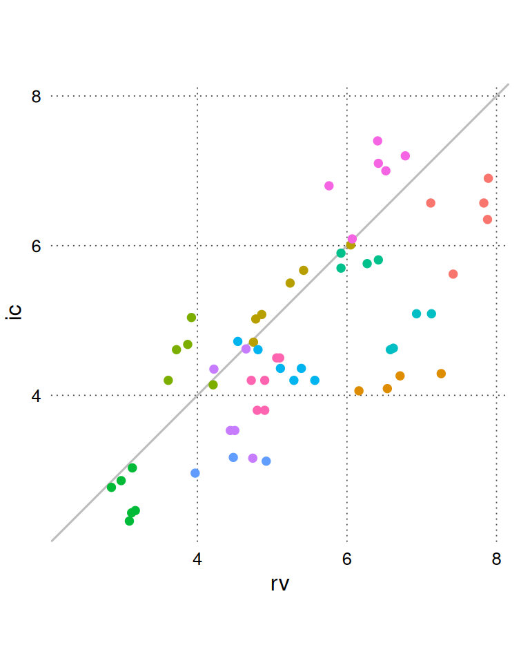
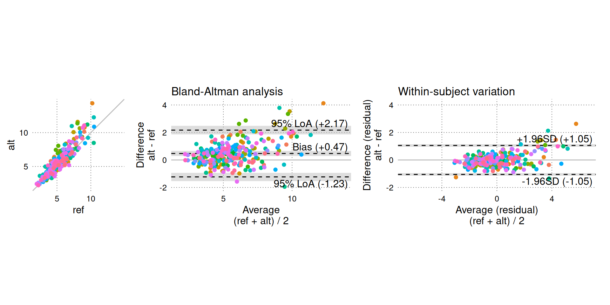
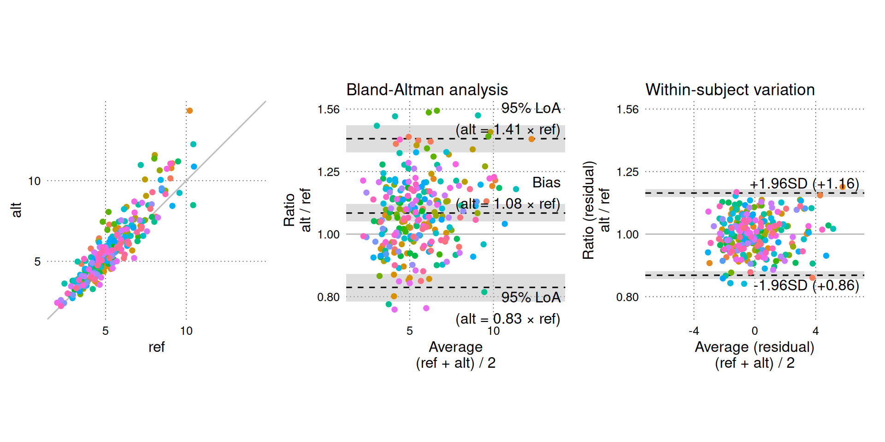
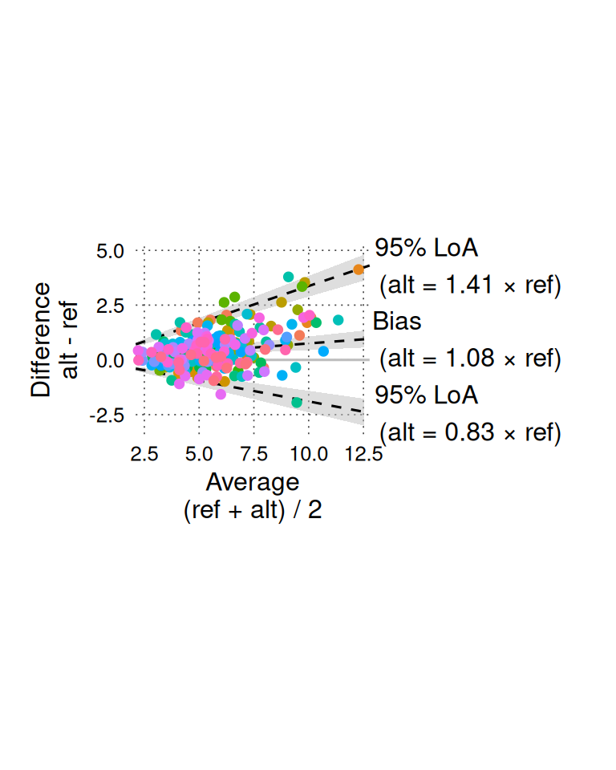

Setup
pak::pak("JohannesNE/BAtrending")or
remotes::install_github("JohannesNE/BAtrending").Load the package (this tutorial also uses the package dplyr):
A simple example
The BAtrending package includes a small sample dataset, CO. It contains paired measurements of cardiac output (CO) using two methods: radionuclide ventriculography (rv) and impedance cardiography (ic). The dataset was published in Bland JM, Altman DG. (1999) Measuring agreement in method comparison studies. Statistical Methods in Medical Research 8, 135-160.
The CO dataset contains 60 measurements from 12 subjects.
head(CO)
#> sub rv ic
#> 1 1 7.83 6.57
#> 2 1 7.42 5.62
#> 3 1 7.89 6.90
#> 4 1 7.12 6.57
#> 5 1 7.88 6.35
#> 6 2 6.16 4.06compare_methods() is the primary analysis function in BAtrending.
compare_methods() uses lme4::lmer() to fit a mixed model with differences (D = alt - ref) as the dependent variable. From this model, Bland-Altman statistics and trending parameters are calculated, accounting for repeated measurements. Additionally, a mixed model with averages (avg = (alt + ref)/2) as the dependent variable is fit. This second model is used to determine the between-subject and within-subject distribution of the measured variable. Later, we demonstrate how to manually fit the mixed model and extract relevant features.
BA_CO <- compare_methods(
CO,
ref_col = rv,
alt_col = ic,
id_col = sub
)
# Bootstrap confidence intervals.
# `nsim` should probably be at least 2000 for real use.
BA_CO <- add_confint(BA_CO, nsim = 999, .progress = "none")We can view the raw data (rv and ic) using BA_plot_scatter(). It is generally recommended to set the aspect ratio to 1 for easy comparison between the methods.
BA_plot_scatter(BA_CO, aspect_ratio = 1)
A standard Bland-Altman plot is created with BA_plot().
BA_plot(BA_CO, aspect_ratio = 1)
BA_plot_combine() is a convenience function that combines three plots: the scatter plot and Bland-Altman plot shown above and a residuals plot. The residuals plot shows only the within-subject variation, which is the only variation relevant for assessing trending agreement (the residuals plot can be created directly with BA_plot_residuals()).
Setting equal_scales = TRUE (default) matches the dimensions of the residuals plot to the standard Bland-Altman plot, so we can visually compare the within-subject variation (right panel) to the total variation shown in the Bland-Altman analysis (middle panel).
BA_plot_combine(BA_CO, aspect_ratio = 1, equal_scales = TRUE)
On the Y-axis of the residuals plot, we observe that there is little within-subject variation in the difference between simultaneous measurements, especially compared to the total variation (Y-axis of the middle panel). By itself, this suggests good trending agreement, but we must also consider how much CO acutally varied in the study. The average CO () represents our best guess of the true CO and is plotted on the X-axis of the middle and right panels. The middle panel shows that a wide range of CO values are included in the study, but the right panel reveals that the within-subject variation in CO is very limited. We do not know how the within-subject variability would change if CO itself varied significantly within subjects; therefore, we cannot confidently interpret the low within-subject variability as “good” trending agreement.
The results from the analysis can be shown in table form in the console with print(BA_CO) or by simply calling the object name:
BA_CO
#> 60 paired measurements in 12 subjects
#>
#> est [95% CI]
#> === Distribution ===
#> Mean : 5.035 [ 4.377; 5.726]
#> Between-subject variation (SD) : 1.210 [ 0.686; 1.769]
#> Within-subject variation (SD) : 0.283 [ 0.226; 0.336]
#> Total variation (SD) : 1.243 [ 0.752; 1.794]
#>
#> === Method comparison ===
#> Bias (alt - ref) : -0.705 [-1.244; -0.139]
#> Between-subject variation (SD) : 0.934 [ 0.504; 1.323]
#> Within-subject variation (SD) : 0.413 [ 0.326; 0.494]
#> Total variation (SD) : 1.022 [ 0.650; 1.384]
#> Intraclass correlation
#> └ Between/Total variance : 0.836 [ 0.606; 0.923]
#> Limits of agreement (95%)
#> ├ Upper limit : 1.298 [ 0.367; 2.250]
#> └ Lower limit : -2.707 [-3.538; -1.766]
#> Percentage error : 0.398 [ 0.254; 0.540]
#>
#> --- Trending ---
#> Within-subject perc. error : 0.161 [ 0.127; 0.193]
#> Change LoA [±] (95%) : 1.146 [ 0.904; 1.369]A publication-ready table is created with:
BA_table(BA_CO)| Estimate [95% CI] | |
|---|---|
| 1 Distribution of the averages of simultaneous measurements (alt + ref)/2. | |
| 2 Percentage error = 1.96 · \(\sigma_{total,D}\) (or \(\sigma_{within,D}\))/mean | |
| 3 Change limits of agreement (95%) = 1.96 · √2 · \(\sigma_{within,D}\). | |
| SD: standard deviation; alt: alternative method; ref: reference method | |
| Distribution1 | Distribution |
| Mean | 5.03 [4.38; 5.73] |
| Between-subject SD | 1.21 [0.69; 1.77] |
| Within-subject SD | 0.28 [0.23; 0.34] |
| Total SD | 1.24 [0.75; 1.79] |
| Method comparison (alt - ref) | Method comparison (alt - ref) |
| Bias | -0.70 [-1.24; -0.14] |
| Between-subject SD (\(\sigma_{between,D}\)) | 0.93 [0.50; 1.32] |
| Within-subject SD (\(\sigma_{within,D}\)) | 0.41 [0.33; 0.49] |
| Total SD (\(\sigma_{total,D}\)) | 1.02 [0.65; 1.38] |
| Limits of agreement (95%) | Limits of agreement (95%) |
| Upper limit | 1.30 [0.37; 2.25] |
| Lower limit | -2.71 [-3.54; -1.77] |
| Percentage error2 | 39.8 [25.4; 54.0] % |
| Within-subject percentage error2 | 16.1 [12.7; 19.3] % |
| Change limits of agreement (95%)3 | ±1.15 [0.90; 1.37] |
BA_table() uses tinytable::tt() and can be exported to several common formats including PDF and .docx (see tinytable::save_tt()).
Proportional errors - logarithmic transformation
In the example above, we assumed that measurement errors were independent of the true CO. This assumption is supported by the Bland-Altman plot and residuals plots, which do not indicate a relationship between the average CO and the variation in measurement differences.
However, it is common to encounter data, or have prior knowledge, suggesting that measurement errors increase proportionally to the measured value.
In the following section, we will simulate simultaneous measurements of CO with two methods that have measurement errors proportional to the true CO.
First, we simulate 5 true CO values in each of 50 subjects. BAtrending provides a convenience function, simulate_repeated_data(), for this purpose.
set.seed(1)
sim_CO <- simulate_repeated_data(
n_sub = 50, # subjects
n_rep = 5, # repetitions
avg = 5, # Overall average CO.
# Between-subject variation in CO
between_sub_sd = 0.5,
# Within-subject variation in CO (relative to the mean CO for the subject).
within_sub_rel_change_sd = 0.3,
var_name = "co_true"
)
head(sim_CO)
#> id co_true
#> 1 1 5.281320
#> 2 1 3.900623
#> 3 1 5.191799
#> 4 1 3.339882
#> 5 1 7.204108
#> 6 2 9.223510
hist(sim_CO$co_true, breaks = 10)
Now, we simulate measurements of the true CO using the function simulate_measurement():
sim_CO <- sim_CO |>
mutate(
# Reference method
ref = simulate_measurement(
true_val = co_true,
sub_id = id,
mean_bias = log(1), # 0, no bias.
# between-subject variation of 5% of true CO.
sub_bias_sd = log(1.05),
# within-subject variation of 5% of true CO.
residual_error_sd = log(1.05),
proportional_errors = TRUE
),
# Alternative method
alt = simulate_measurement(
true_val = co_true,
sub_id = id,
mean_bias = log(1.1), # 10% higher than true CO.
# between-subject variation of 10% of true CO.
sub_bias_sd = log(1.1),
# within-subject variation of 5% of true CO.
residual_error_sd = log(1.05),
proportional_errors = TRUE
)
)
head(sim_CO)
#> id co_true ref alt
#> 1 1 5.281320 5.928015 5.640380
#> 2 1 3.900623 4.211349 3.989880
#> 3 1 5.191799 5.524657 6.044544
#> 4 1 3.339882 3.456067 3.316707
#> 5 1 7.204108 8.127387 7.766766
#> 6 2 9.223510 9.022741 10.143470We first perform a Bland-Altman analysis on an absolute (non-log) scale.
BA_sim_abs <- compare_methods(
sim_CO,
ref_col = ref,
alt_col = alt,
id_col = id
)
# Increase nsim for real use.
BA_sim_abs <- add_confint(BA_sim_abs, nsim = 999, .progress = "none")
BA_plot_combine(BA_sim_abs, aspect_ratio = 1)
The funnel-shaped scatter of differences in the Bland-Altman plot (middle panel) clearly indicates that the magnitude of the differences increases with higher CO.
We instead perform the analysis on log-transformed measurements. This corresponds to an assumption that measurement errors are proportional to the true CO. Specifically, that the ratios between simultaneous measurements from two methods are independent of the true CO.
BA_sim_log <- compare_methods(
sim_CO,
ref_col = ref,
alt_col = alt,
id_col = id,
logtrans = TRUE
)
# Increase nsim for real use.
BA_sim_log <- add_confint(BA_sim_log, nsim = 999, .progress = "none")
BA_plot_combine(BA_sim_log, aspect_ratio = 1, keep_log_scale = TRUE)
# aspect_ratio only affects the scatter plot (left panel) for
# log-transformed data.On log-transformed measurements, there is no relationship between CO and agreement between methods (of course, this was expected, as we generated the data with proportional errors).
The results from the Bland-Altman analysis on log-transformed measurements (e.g. bias, limits of agreement and change limits of agreement) can be exponentiated and interpreted on the original scale. The interpretation of these back-transformed results is that they estimate ratios between the measurements instead of absolute differences.
BA_plot_combine(BA_sim_log, aspect_ratio = 1, keep_log_scale = FALSE)
A ratio of 1 signifies “no bias” (). The Y-axis is shown with logarithmic intervals to appropriately balance the ratios visually (i.e. an increase of 25% is balanced by a decrease of 20%).
A relative bias of 1.08 indicates that the alternative method measures 8% more than the reference method on average. Relative limits of agreement define the interval in which ratios between future paired measurements (in a random subject) with the same alternative and reference methods are expected to fall in 95% of cases.
We can also show the results of the log-transformed Bland-Altman analysis on the non-transformed data with:
BA_plot_normalized_log(BA_sim_log, aspect_ratio = 1)
Again, we can generate a table of the back-transformed (exponentiated) results:
BA_table(BA_sim_log, keep_log_scale = FALSE)| Estimate [95% CI] | |
|---|---|
| 1 Distribution of the averages of simultaneous measurements (alt + ref)/2. | |
| 2 Percentage error = 1.96 · \(\sigma_{total,D}\) (or \(\sigma_{within,D}\))/mean | |
| 3 Change limits of agreement (95%) = 1.96 · √2 · \(\sigma_{within,D}\). | |
| SD: standard deviation; alt: alternative method; ref: reference method; ⋇: multiply or divide | |
| Distribution1 | Distribution |
| Mean | 5.58 [5.28; 5.87] |
| Between-subject SD | 0.67 [0.19; 0.98] |
| Within-subject SD | 1.73 [1.57; 1.90] |
| Total SD | 1.86 [1.70; 2.04] |
| Method comparison, exp(log-analysis), (alt / ref) | Method comparison, exp(log-analysis), (alt / ref) |
| Bias | 1.08 [1.05; 1.11] |
| Between-subject SD (\(\sigma_{between,D}\)) | 1.12 [1.09; 1.15] |
| Within-subject SD (\(\sigma_{within,D}\)) | 1.08 [1.07; 1.09] |
| Total SD (\(\sigma_{total,D}\)) | 1.14 [1.12; 1.17] |
| Limits of agreement (95%) | Limits of agreement (95%) |
| Upper limit | 1.41 [1.34; 1.47] |
| Lower limit | 0.83 [0.79; 0.87] |
| Percentage error2 | – |
| Within-subject percentage error2 | – |
| Change limits of agreement (95%)3 | ⋇1.23 [1.21; 1.26] |
The back-transformed change limits of agreement is 1.23. This is interpreted as: if we measure a change in CO with both methods simultaneously, we expect the change from one method to be at most 23% higher than the other method in 95% of cases.
Percentage errors are not meaningful for log-transformed data and are also not needed. A Bland-Altman analysis on log-transformed data inherently gives measures of agreement that are relative to the measured value.
To compare results from an analysis on log-transformed measurements with an analysis on absolute (non-transformed) measurements, the SD of differences between log-transformed measurements () is approximately equal to the SD of differences on the original measurements () relative to the mean of these measurements:
when is less than approximately 0.3. Note that must be the natural logarithm (base ) for this approximate equality to hold.
Thus, on the log scale is approximately equal to the “percentage error” that would be calculated on the original scale.
This is analogous to how the coefficient of variation () is approximately equal to 1.
Manually fit the mixed model and extract features
While BAtrending conveniently fits a mixed effects model and extracts relevant variables, it is useful to understand how to do this manually.
We will use the CO dataset again, and use lme4::lmer() to fit the same model as used in compare_methods().
First, we calculate the difference and average for each pair of simultaneous measurements.
library(lme4)
mod <- lmer(diff ~ 1 + (1 | sub), data = CO_diff_avg)
summary(mod)
#> Linear mixed model fit by REML ['lmerMod']
#> Formula: diff ~ 1 + (1 | sub)
#> Data: CO_diff_avg
#>
#> REML criterion at convergence: 103.1
#>
#> Scaled residuals:
#> Min 1Q Median 3Q Max
#> -2.19408 -0.62492 -0.08043 0.57449 2.15307
#>
#> Random effects:
#> Groups Name Variance Std.Dev.
#> sub (Intercept) 0.8728 0.9342
#> Residual 0.1708 0.4133
#> Number of obs: 60, groups: sub, 12
#>
#> Fixed effects:
#> Estimate Std. Error t value
#> (Intercept) -0.7045 0.2752 -2.56We can see that the bias (the only fixed effect) is -0.70, the between-subject SD is 0.93 and within-subject (Residual) SD is 0.41.
To extract these values programmatically, use:
bias <- fixef(mod)[[1]] # Get intercept from model
# Get variance components (SD)
sd_components <- as.data.frame(VarCorr(mod))[['sdcor']]Most Bland-Altman statistics are calculated from these values:
calc_BA_stats_from_model <- function(m) {
bias <- fixef(m)[[1]] # Get intercept from model
# Get variance components (SD)
sd_components <- as.data.frame(VarCorr(m))[['sdcor']]
sd.between <- unname(sd_components[1])
sd.within <- unname(sd_components[2])
sd.total <- sqrt(sd.between^2 + sd.within^2)
intraclass.correlation <- sd.between^2 / sd.total^2
loa.lwr <- bias - 1.96 * sd.total
loa.upr <- bias + 1.96 * sd.total
change.loa <- 1.96 * sqrt(2) * sd.within
c(
bias = bias,
sd.between = sd.between,
sd.within = sd.within,
sd.total = sd.total,
intraclass.correlation = intraclass.correlation,
loa.lwr = loa.lwr,
loa.upr = loa.upr,
change.loa = change.loa
)
}
ba_stats <- calc_BA_stats_from_model(mod)
ba_stats
#> bias sd.between sd.within
#> -0.7045210 0.9342410 0.4132823
#> sd.total intraclass.correlation loa.lwr
#> 1.0215716 0.8363349 -2.7068013
#> loa.upr change.loa
#> 1.2977593 1.1455601Percentage errors also require knowing the mean of the measurements.
mean_val <- mean(CO_diff_avg$avg)
percentage.error <- 1.96 * ba_stats["sd.total"] / mean_val
percentage.error.within <- 1.96 * ba_stats["sd.within"] / mean_val
c(
percentage.error = percentage.error,
percentage.error.within = percentage.error.within
)
#> percentage.error.sd.total percentage.error.within.sd.within
#> 0.3986290 0.1612675Here, we use the simple mean of all measurements. In compare_methods() the mean value is estimated from a mixed model that accounts for repeated measurements within subjects (avg ~ 1 + (1|sub)). This model is also used for describing the distribution of measurements (e.g. BA_CO$distribution_stats).
Bootstrap confidence intervals
To calculate confidence intervals (CI) for the Bland-Altman statistics, we can use a parametric bootstrap on the model.
lme4::confint.merMod(
mod,
FUN = calc_BA_stats_from_model,
level = 0.95,
method = "boot",
nsim = 500, # increase nsim for actual analysis
boot.type = "perc",
.progress = "none" # hide progress bar
)
#> 2.5 % 97.5 %
#> bias -1.2591921 -0.1979777
#> sd.between 0.4937674 1.3230741
#> sd.within 0.3298689 0.4988472
#> sd.total 0.6389897 1.3833602
#> intraclass.correlation 0.5668726 0.9210345
#> loa.lwr -3.5834825 -1.8390891
#> loa.upr 0.2788395 2.1981297
#> change.loa 0.9143500 1.3827340This does not calculate CIs for the percentage errors, since this requires an estimate of the mean CO, which is not part of this mixed model. In BAtrending, CIs for percentage error are calculated by scaling the CI for sd.total, treating the mean CO as a known value. Ideally, the uncertainty of the mean CO should be included in the CI for the percentage error.